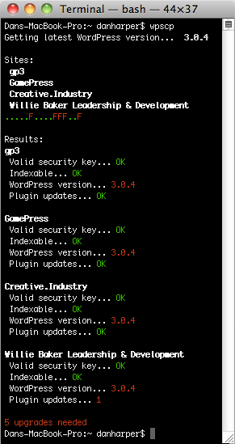

In a recent blog post, venture capitalist Fred Wilson talked about his ongoing struggle with email management and the various solutions he’s tried, concluding: “Every time I make a productivity gain, the volume eventually overwhelms me.” It’s a familiar problem. We’re all extremely busy, and we all get too much email. So what to do?
The guys at Packt Publishing recently emailed me asking if I'd be interested in reviewing their latest book, PHP 5 Social Networking by Michael Peacock. Of course I jumped at the chance of receiving another free book!
In a recent blog post, venture capitalist Fred Wilson talked about his ongoing struggle with email management and the various solutions he’s tried, concluding: “Every time I make a productivity gain, the volume eventually overwhelms me.” It’s a familiar problem. We’re all extremely busy, and we all get too much email. So what to do? In a recent blog post, venture capitalist Fred Wilson talked about his ongoing struggle with email management and the various solutions he’s tried, concluding.
The guys at Packt Publishing recently emailed me asking if I'd be interested in reviewing their latest book, PHP 5 Social Networking by Michael Peacock. Of course I jumped at the chance of receiving another free book!
The guys at Packt Publishing recently emailed me asking if I'd be interested in reviewing their latest book, PHP 5 Social Networking by Michael Peacock. Of course I jumped at the chance of receiving another free book!